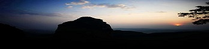
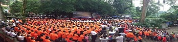

首页
简介
美食
景点
人文风俗
拼图游戏
计算器
倒计时
注册/登录
风景优美

地理优越
人们相处友善

著名景点-桂平西山
著名景点-太平天国文化遗址
本土特产-麻垌荔枝
本土特产-西山茶
桂平知道 News
更多>>
桂平位于广西东南部，黔江、郁江、浔江在城区交汇。
桂平是中国首批AAAA级旅游城市之一，是我国第五批国家地质公园之一。
全市辖26个乡镇431个村(社区)，总面积4074平方公里。
有汉、壮、瑶等12个民族，耕地面积101.7万亩，其中水田面积77万亩，是广西第一人口大县。
桂平市拥有丰富的农林、水电和矿产资源
是广西最大的粮食生产基地、内河船舶生产基地、休闲服装生产基地、黄沙鲨养殖基地和腐竹出口基地。
荣获全国法制宣传教育先进县“三连冠”。
是中国西部百强县、全国粮食生产先进县、全国双拥模范城、广西科学发展十佳县、广西招商引资工作先进县和示范县。
荣获广西首个县级“中国优秀旅游城市”和“国家地质公园”称号。
大藤峡、白石洞天、龙潭国家森林公园、太平天国金田起义遗址等的生态自然景观、地貌景观和历史人文景观
桂平西山全国十三大佛教圣地之一
西山每年一度的浴佛盛会都广受瞩目，成为桂平市的旅游特色，游客都纷至沓来，烧香还愿。
2019-2020-1学期 web前端开发技术课程设计 软件Q176 李秋菊 201709601051